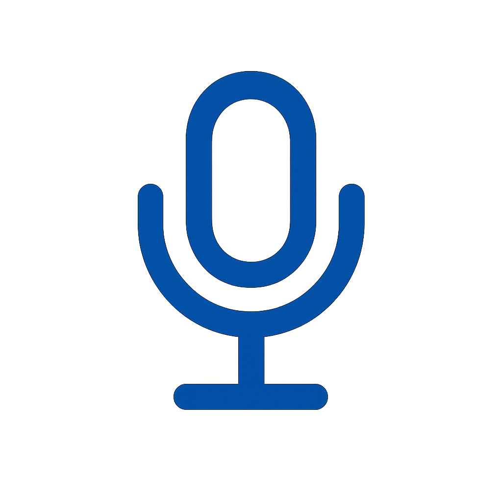

<!DOCTYPE html>
<html lang="es">
<head>
    <meta charset="UTF-8">
    <meta name="viewport" content="width=device-width, initial-scale=1.0">
    <title>Chat con VIDA - Asistente de Donación</title>
    
    <!-- Tailwind CSS for styling -->
    <script src="https://cdn.tailwindcss.com"></script>
    
    <!-- Google Fonts: Inter -->
    <link rel="preconnect" href="https://fonts.googleapis.com">
    <link rel="preconnect" href="https://fonts.gstatic.com" crossorigin>
    <link href="https://fonts.googleapis.com/css2?family=Inter:wght@400;500;600;700&display=swap" rel="stylesheet">
    
    <!-- three.js for interactive background -->
    <script src="https://cdnjs.cloudflare.com/ajax/libs/three.js/r128/three.min.js"></script>
    
    <!-- Custom Styles -->
    <style>
        :root {
            --vida-bg: #E3F2FD;
            --vida-text-dark: #333333;
            --vida-btn-green: #66BB6A;
            --vida-btn-green-hover: #43A047;
            --vida-text-secondary: #757575;
            --vida-bg-footer: #F5F5F5;
            --vida-chat-bot-bg: #F5F5F5;
            --vida-chat-user-bg: #E8F5E9;
            --vida-btn-feedback: #4FC3F7;
            --vida-suggest-btn-bg: #E0F2F7;
            --vida-suggest-btn-hover: #B3E5FC;
            --vida-primary: #2563EB;
            --vida-secondary: #3B82F6;
            --vida-border: #E2E8F0;
            --vida-scrollbar: #BDBDBD;
        }

        body {
            font-family: 'Inter', sans-serif;
            background-color: #f0f9ff;
            background-image: 
                radial-gradient(at 47% 33%, hsl(200, 51%, 82%) 0px, transparent 50%),
                radial-gradient(at 9% 62%, hsl(215, 51%, 76%) 0px, transparent 50%),
                radial-gradient(at 82% 65%, hsl(210, 60%, 75%) 0px, transparent 50%),
                radial-gradient(at 24% 88%, hsl(220, 60%, 85%) 0px, transparent 50%),
                radial-gradient(at 75% 8%, hsl(205, 37%, 79%) 0px, transparent 50%),
                radial-gradient(at 56% 33%, hsl(260.00, 80%, 85%) 0px, transparent 50%);
            background-attachment: fixed;
            min-height: 100vh;
            overflow-x: hidden;
            display: flex;
            align-items: center;
            justify-content: center;
            margin: 0;
            padding: 0;
        }

        #bg-canvas {
            position: fixed;
            top: 0;
            left: 0;
            width: 100%;
            height: 100%;
            z-index: -1;
            pointer-events: none;
        }

        #chat-screen-container {
            animation: popIn 0.5s cubic-bezier(0.16, 1, 0.3, 1) forwards;
            max-width: 1000px;
            width: 100%;
            margin: 0 auto;
            box-shadow: 0 10px 35px rgba(13, 27, 42, 0.12), 0 5px 15px rgba(255,255,255,0.3), inset 0 1px 0 rgba(255,255,255,0.8);
            border-radius: 2rem;
            background: rgba(255,255,255,0.85);
            backdrop-filter: blur(24px) saturate(1.2);
            -webkit-backdrop-filter: blur(24px) saturate(1.2);
            border: 1.5px solid rgba(59,130,246,0.10);
        }

        @media (min-width: 640px) {
            #chat-screen-container {
                max-width: 900px;
                max-height: 85vh;
                height: 85vh;
            }
        }

        #chat-screen {
            height: 85vh;
            max-height: 85vh;
            background: linear-gradient(135deg, #e0e7ff 0%, #f0fdfa 50%, #e3f2fd 100%);
            border-radius: 2rem;
            border: 1px solid var(--vida-border);
            box-shadow: 0 4px 24px 0 rgba(31,38,135,0.10);
        }

        #chat-container-wrapper {
            flex: 1;
            overflow-y: auto;
            max-height: calc(85vh - 140px);
        }

        .chat-bubble {
            opacity: 0;
            transform: translateY(20px) scale(0.95);
            animation: fadeInUp 0.5s cubic-bezier(0.16, 1, 0.3, 1) forwards;
        }

        .bot-bubble .chat-bubble-text {
            opacity: 0;
            animation: fadeInText 0.3s ease-out 0.2s forwards;
        }

        .chat-bubble-text {
            text-align: justify !important;
            line-height: 1.6;
            word-break: break-word;
            hyphens: auto;
            font-size: 1.08rem;
        }

        .bot-bubble {
            background: var(--vida-chat-bot-bg) !important;
            color: var(--vida-text-dark) !important;
            border-radius: 1.5rem 1.5rem 1.5rem 0.5rem !important;
            box-shadow: 0 2px 8px rgba(33,150,243,0.08);
            border: 1px solid #e3f2fd;
        }
        .user-bubble {
            background: var(--vida-chat-user-bg) !important;
            color: var(--vida-text-dark) !important;
            border-radius: 1.5rem 1.5rem 0.5rem 1.5rem !important;
            box-shadow: 0 2px 8px rgba(102,187,106,0.08);
            border: 1px solid #e8f5e9;
        }

        .bot-bubble::after {
            content: '';
            position: absolute;
            left: -10px;
            bottom: 0px;
            width: 0;
            height: 0;
            border: 10px solid transparent;
            border-right-color: var(--vida-chat-bot-bg);
            border-left: 0;
            border-bottom: 0;
            opacity: 0;
            animation: fadeInText 0.2s ease-out 0.1s forwards;
        }
        .user-bubble::after {
            content: '';
            position: absolute;
            right: -10px;
            bottom: 0px;
            width: 0;
            height: 0;
            border: 10px solid transparent;
            border-left-color: var(--vida-chat-user-bg);
            border-right: 0;
            border-bottom: 0;
        }

        .tts-playing {
            background: var(--vida-btn-feedback) !important;
            animation: tts-pulse 1s infinite;
            box-shadow: 0 0 0 0 rgba(79,195,247,0.7);
        }
        @keyframes tts-pulse {
            0% { box-shadow: 0 0 0 0 rgba(79,195,247,0.7); }
            70% { box-shadow: 0 0 0 10px rgba(79,195,247,0); }
            100% { box-shadow: 0 0 0 0 rgba(79,195,247,0.7); }
        }
        .mic-recording {
            background: #df5250 !important; /* Rojo grabación */
            animation: mic-pulse 1s infinite;
            box-shadow: 0 0 0 0 rgba(238, 80, 77, 0.7);
        }
        @keyframes mic-pulse {
            0% { box-shadow: 0 0 0 0 rgba(237, 99, 96, 0.7); }
            70% { box-shadow: 0 0 0 10px rgba(229,57,53,0); }
            100% { box-shadow: 0 0 0 0 rgba(229,57,53,0.7); }
        }

        .bot-avatar-breathing {
            animation: breathing 3s ease-in-out infinite;
        }
        @keyframes breathing {
            0% { transform: scale(1); }
            50% { transform: scale(1.03); }
            100% { transform: scale(1); }
        }
        .logo-heartbeat {
            animation: heart-beat 2.5s ease-in-out infinite;
        }
        @keyframes heart-beat {
            0% { transform: scale(1); }
            50% { transform: scale(1.05); }
            100% { transform: scale(1); }
        }

        .active-feedback {
            transform: scale(0.95);
            transition: transform 0.1s ease-out;
        }

        .chat-messages::-webkit-scrollbar { width: 8px; }
        .chat-messages::-webkit-scrollbar-track { background: #FFFFFF; }
        .chat-messages::-webkit-scrollbar-thumb { background: var(--vida-scrollbar); border-radius: 10px; }
        .chat-messages::-webkit-scrollbar-thumb:hover { background: var(--vida-text-dark); }

        @keyframes popIn {
            from {
                opacity: 0;
                transform: scale(0.9);
            }
            to {
                opacity: 1;
                transform: scale(1);
            }
        }
        @keyframes fadeInUp {
            from {
                opacity: 0;
                transform: translateY(15px) scale(0.98);
            }
            to {
                opacity: 1;
                transform: translateY(0) scale(1);
            }
        }
        @keyframes fadeInText {
            from { opacity: 0; }
            to { opacity: 1; }
        }

        /* Botones principales */
        #send-btn {
            background: linear-gradient(135deg, var(--vida-btn-green), var(--vida-btn-green-hover));
            color: #fff;
            box-shadow: 0 2px 8px rgba(102,187,106,0.12);
            transition: all 0.2s;
        }
        #send-btn:hover {
            background: linear-gradient(135deg, var(--vida-btn-green-hover), #388E3C);
            transform: scale(1.08);
            box-shadow: 0 4px 16px rgba(76,175,80,0.18);
        }
        #mic-btn {
            background: linear-gradient(135deg, #5ca7e5, #7ab5f1);
            color: #fff;
            box-shadow: 0 2px 8px rgba(33,150,243,0.12);
            transition: all 0.2s;
        }
        #mic-btn:hover {
            background: linear-gradient(135deg, #3d94ec, #52a8ee);
            transform: scale(1.08);s
            box-shadow: 0 4px 16px rgba(33,150,243,0.18);
        }
        #suggest-questions-btn {
            background: linear-gradient(135deg, var(--vida-suggest-btn-bg), var(--vida-suggest-btn-hover));
            color: var(--vida-text-dark);
            box-shadow: 0 2px 8px rgba(33,150,243,0.10);
            transition: all 0.2s;
        }
        #suggest-questions-btn:hover {
            background: linear-gradient(135deg, var(--vida-suggest-btn-hover), var(--vida-suggest-btn-bg));
            transform: scale(1.08);
            box-shadow: 0 4px 16px rgba(33,150,243,0.15);
        }

        /* Responsive y mobile: mantener mejoras previas */
        @media (max-width: 640px) {
            html, body {
                overflow: hidden;
                position: fixed;
                width: 100%;
                height: 100%;
            }
            body {
                display: block !important;
                padding: 0 !important;
                margin: 0 !important;
                align-items: unset !important;
                justify-content: unset !important;
            }
            #chat-screen-container {
                height: 100vh !important;
                height: calc(var(--vh, 1vh) * 100) !important;
                max-height: 100vh !important;
                max-height: calc(var(--vh, 1vh) * 100) !important;
                width: 100vw !important;
                padding: 0 !important;
                margin: 0 !important;
                max-width: none !important;
                position: fixed !important;
                top: 0 !important;
                left: 0 !important;
                right: 0 !important;
                bottom: 0 !important;
            }
            #chat-screen {
                height: 100vh !important;
                height: calc(var(--vh, 1vh) * 100) !important;
                max-height: 100vh !important;
                max-height: calc(var(--vh, 1vh) * 100) !important;
                border-radius: 0 !important;
                border: none !important;
            }
            #chat-input {
                font-size: 16px !important;
                -webkit-appearance: none;
                appearance: none;
                transform: translateZ(0);
                -webkit-transform: translateZ(0);
            }
            footer {
                position: relative;
                z-index: 10;
                flex-shrink: 0;
                bottom: 0;
                border-radius: 0 !important;
            }
            #chat-container-wrapper {
                flex: 1;
                overflow-y: auto;
                -webkit-overflow-scrolling: touch;
                overscroll-behavior: contain;
            }
            * {
                -webkit-text-size-adjust: 100%;
                text-size-adjust: 100%;
            }
            header {
                padding: 0.75rem !important;
                border-radius: 0 !important;
            }
        }
    </style>
</head>
<body class="flex items-center justify-center min-h-screen p-2 sm:p-4 bg-transparent">
    <canvas id="bg-canvas"></canvas>
    
    <!-- CHAT SCREEN -->
    <div id="chat-screen-container" class="w-full max-w-4xl h-[95vh] max-h-[95vh] sm:h-[85vh] sm:max-h-[85vh] sm:rounded-2xl flex flex-col mx-auto">
        <div id="chat-screen" class="w-full h-full bg-white/60 backdrop-blur-xl sm:rounded-2xl shadow-2xl flex flex-col border border-gray-200/80">
            <header class="bg-white/80 backdrop-blur-sm border-b border-gray-200/80 p-4 sm:rounded-t-2xl flex items-center justify-between flex-shrink-0">
                 <div class="flex items-center space-x-3">
                     <div class="w-12 h-12 bg-gradient-to-br from-[var(--vida-primary)] to-[var(--vida-secondary)] rounded-full flex items-center justify-center shadow-md">
                         <svg class="h-7 w-7 text-white logo-heartbeat" xmlns="http://www.w3.org/2000/svg" viewBox="0 0 24 24" fill="currentColor"><path d="M12 21.35l-1.45-1.32C5.4 15.36 2 12.28 2 8.5 2 5.42 4.42 3 7.5 3c1.74 0 3.41.81 4.5 2.09C13.09 3.81 14.76 3 16.5 3 19.58 3 22 5.42 22 8.5c0 3.78-3.4 6.86-8.55 11.54L12 21.35z"/></svg>
                     </div>
                 
                 </div>
                <button id="close-chat-btn" class="text-gray-500 hover:bg-gray-200/50 p-2 rounded-full transition-colors" title="Cerrar Chat">
                     <svg class="h-8 w-8" xmlns="http://www.w3.org/2000/svg" fill="none" viewBox="0 0 24 24" stroke-width="2" stroke="currentColor">
                         <path stroke-linecap="round" stroke-linejoin="round" d="M2.25 12l8.954-8.955c.44-.439 1.152-.439 1.591 0L21.75 12M4.5 9.75v10.125c0 .621.504 1.125 1.125 1.125H9.75v-4.875c0-.621.504-1.125 1.125-1.125h2.25c.621 0 1.125.504 1.125 1.125V21h4.125c.621 0 1.125-.504 1.125-1.125V9.75M8.25 21h8.25" />
                     </svg>
                </button>
            </header>
            <main class="flex-1 flex overflow-hidden relative">
                <div id="chat-container-wrapper" class="flex-1 flex flex-col p-4 sm:p-6 overflow-y-auto chat-messages">
                     <div id="chat-container" class="flex flex-col space-y-5"></div>
                </div>
                <button id="scroll-to-bottom-btn" class="absolute bottom-6 right-6 bg-white/80 backdrop-blur-sm text-slate-600 rounded-full p-3 shadow-lg hover:bg-slate-200 transition-all transform scale-0" title="Ir al final">
                    <svg xmlns="http://www.w3.org/2000/svg" class="h-6 w-6" fill="none" viewBox="0 0 24 24" stroke="currentColor" stroke-width="2">
                        <path stroke-linecap="round" stroke-linejoin="round" d="M19 13l-7 7-7-7m14-8l-7 7-7-7" />
                    </svg>
                </button>
                <aside class="w-1/3 bg-slate-50/60 p-6 border-l border-gray-200/80 hidden md:flex flex-col items-center justify-center">
                    <div id="chat-robot-avatar-large" class="w-48 h-48 mb-6 rounded-full flex items-center justify-center shadow-lg overflow-hidden bg-white bot-avatar-breathing">
                        
                    </div>
                    <div class="text-center">
                        <h3 class="font-semibold text-lg text-slate-800">Estoy para ayudarte</h3>
                        <p class="text-sm text-slate-500 mt-1">Pregúntame sobre el proceso de donación de órganos y tejidos.</p>
                    </div>
                </aside>
            </main>
            <footer class="p-4 bg-white/60 backdrop-blur-sm border-t border-gray-200/80 sm:rounded-b-2xl flex-shrink-0">
                <div id="suggested-questions-container" class="flex flex-wrap gap-2 mb-3 hidden"></div>
                <form id="chat-form" class="flex items-center space-x-3">
                    <button type="button" id="suggest-questions-btn" class="bg-slate-100 text-slate-600 rounded-full p-2.5 h-12 w-12 sm:w-auto sm:px-4 hover:bg-slate-200 transition-all focus:outline-none focus:ring-2 focus:ring-offset-2 focus:ring-[var(--vida-secondary)] disabled:bg-gray-200 disabled:cursor-not-allowed flex items-center justify-center" title="Sugerir preguntas">
                        <svg class="h-5 w-5" xmlns="http://www.w3.org/2000/svg" fill="none" viewBox="0 0 24 24" stroke-width="1.5" stroke="currentColor">
                          <path stroke-linecap="round" stroke-linejoin="round" d="M9.813 15.904L9 18.75l-.813-2.846a4.5 4.5 0 00-3.09-3.09L2.25 12l2.846-.813a4.5 4.5 0 003.09-3.09L9 5.25l.813 2.846a4.5 4.5 0 003.09 3.09L15.75 12l-2.846.813a4.5 4.5 0 00-3.09 3.09zM18.259 8.715L18 9.75l-.259-1.035a3.375 3.375 0 00-2.455-2.456L14.25 6l1.036-.259a3.375 3.375 0 002.455-2.456L18 2.25l.259 1.035a3.375 3.375 0 002.456 2.456L21.75 6l-1.035.259a3.375 3.375 0 00-2.456 2.456zM16.898 20.562L16.25 22.5l-.648-1.938a3.375 3.375 0 00-2.672-2.672L11.25 18l1.938-.648a3.375 3.375 0 002.672-2.672L16.75 13.5l.648 1.938a3.375 3.375 0 002.672 2.672L21.75 18l-1.938.648a3.375 3.375 0 00-2.672 2.672z" />
                        </svg>
                        <span id="suggest-button-text" class="ml-2 text-sm font-semibold hidden sm:inline">Sugerir</span>
                    </button>
                    <button type="button" id="mic-btn" class="bg-slate-100 text-slate-600 rounded-full p-2.5 h-12 w-12 flex items-center justify-center hover:bg-blue-100 transition-all focus:outline-none focus:ring-2 focus:ring-offset-2 focus:ring-[var(--vida-secondary)]" title="Dictar por voz">
                        <path stroke-linecap=\'round\' stroke-linejoin=\'round\' d=\'M12 18c3.314 0 6-2.686 6-6V7a6 6 0 10-12 0v5c0 3.314 2.686 6 6 6zm0 0v3m-4 0h8\'/></svg>');" />
                    </button>
                    <input type="text" id="chat-input" placeholder="Escribe tu pregunta aquí..." autocomplete="off" class="flex-1 w-full px-5 py-3 border border-gray-300 rounded-full focus:outline-none focus:ring-2 focus:ring-[var(--vida-primary)] transition shadow-sm">
                    <button type="submit" id="send-btn" class="bg-gradient-to-br from-[var(--vida-primary)] to-[var(--vida-secondary)] text-white rounded-full p-3 h-12 w-12 hover:opacity-90 transition-all transform hover:scale-110 focus:outline-none focus:ring-2 focus:ring-offset-2 focus:ring-[var(--vida-secondary)] disabled:from-gray-400 disabled:to-gray-500 disabled:cursor-not-allowed" title="Enviar mensaje">
                        <svg xmlns="http://www.w3.org/2000/svg" class="h-6 w-6" viewBox="0 0 20 20" fill="currentColor"><path d="M10.894 2.553a1 1 0 00-1.788 0l-7 14a1 1 0 001.169 1.409l5-1.429A1 1 0 009 15.571V11a1 1 0 112 0v4.571a1 1 0 00.725.962l5 1.428a1 1 0 001.17-1.408l-7-14z" /></svg>
                    </button>
                </form>
            </footer>
        </div>
    </div>

    <script>
        // --- Speech Recognition (Dictado por voz) ---
        let recognition;
        let recognizing = false;
        const micBtn = document.getElementById('mic-btn');
        const micIcon = document.getElementById('mic-icon');

        // Función para detectar si es Chrome en móvil
        function isMobileChrome() {
            const ua = navigator.userAgent;
            return /Android/.test(ua) && /Chrome\//.test(ua) && !/Edg\//.test(ua);
        }

        // Función para mostrar alertas personalizadas
        function showDictationError(msg) {
            alert(msg + '\n\nSugerencia: Usa Google Chrome en Android, con permisos de micrófono y conexión HTTPS. En iPhone/iPad, la función no está disponible por limitaciones de Apple.');
        }

        if ('webkitSpeechRecognition' in window || 'SpeechRecognition' in window) {
            const SpeechRecognition = window.SpeechRecognition || window.webkitSpeechRecognition;
            try {
                recognition = new SpeechRecognition();
                recognition.lang = 'es-ES';
                recognition.continuous = false;
                recognition.interimResults = false;

                let lastTranscript = '';

                recognition.onstart = function() {
                    recognizing = true;
                    micBtn.classList.add('mic-recording');
                    micIcon.classList.add('text-red-600');
                    micIcon.style.filter = 'none';
                    lastTranscript = '';
                };
                recognition.onend = function() {
                    recognizing = false;
                    micBtn.classList.remove('mic-recording');
                    micIcon.classList.remove('text-red-600');
                    micIcon.style.filter = 'grayscale(0.2) brightness(0.7)';
                    // Si no llegó onresult pero hay transcript, usarlo
                    if (lastTranscript) {
                        chatInput.value = lastTranscript;
                        setTimeout(() => { chatInput.focus(); }, 100);
                    }
                };
                recognition.onerror = function(event) {
                    recognizing = false;
                    micBtn.classList.remove('mic-recording');
                    micIcon.classList.remove('text-red-600');
                    micIcon.style.filter = 'grayscale(0.2) brightness(0.7)';
                    let msg = 'No se pudo reconocer el audio. Intenta de nuevo.';
                    if (event.error === 'not-allowed') {
                        msg = 'Permiso de micrófono denegado. Por favor, permite el acceso al micrófono en la configuración del navegador.';
                    } else if (event.error === 'no-speech') {
                        msg = 'No se detectó voz. Intenta hablar más cerca del micrófono.';
                    } else if (event.error === 'aborted') {
                        msg = 'El dictado fue interrumpido. Intenta de nuevo.';
                    } else if (event.error === 'audio-capture') {
                        msg = 'No se detectó micrófono. Verifica los permisos y la conexión de tu micrófono.';
                    }
                    showDictationError(msg);
                };
                recognition.onresult = function(event) {
                    if (event.results && event.results[0] && event.results[0][0]) {
                        lastTranscript = event.results[0][0].transcript;
                        chatInput.value = lastTranscript;
                        setTimeout(() => { chatInput.focus(); }, 100);
                    }
                };

                micBtn.addEventListener('click', function() {
                    if (window.isSecureContext !== true) {
                        showDictationError('El dictado por voz solo funciona en sitios HTTPS.');
                        return;
                    }
                    if (recognizing) {
                        recognition.stop();
                    } else {
                        try {
                            recognition.start();
                        } catch (err) {
                            showDictationError('No se pudo iniciar el dictado. Puede que otra app esté usando el micrófono o que el navegador tenga una restricción.');
                        }
                    }
                });
            } catch (e) {
                micBtn.disabled = true;
                micBtn.classList.add('opacity-50', 'cursor-not-allowed');
                micBtn.title = 'Dictado por voz no disponible en este navegador.';
                micBtn.addEventListener('click', function() {
                    showDictationError('El dictado por voz no está disponible en este navegador o dispositivo.');
                });
            }
        } else {
            // Desactivar el botón y mostrar advertencia clara
            micBtn.disabled = true;
            micBtn.classList.add('opacity-50', 'cursor-not-allowed');
            micBtn.title = 'Dictado por voz no compatible en este dispositivo/navegador.';
            micBtn.addEventListener('click', function() {
                showDictationError('El dictado por voz no es compatible con este navegador o dispositivo.');
            });
        }
        // --- DOM Elements ---
        const chatContainer = document.getElementById('chat-container');
        const chatContainerWrapper = document.getElementById('chat-container-wrapper');
        const chatForm = document.getElementById('chat-form');
        const chatInput = document.getElementById('chat-input');
        const closeChatBtn = document.getElementById('close-chat-btn');
        const suggestQuestionsBtn = document.getElementById('suggest-questions-btn');
        const suggestedQuestionsContainer = document.getElementById('suggested-questions-container');
        const suggestButtonText = document.getElementById('suggest-button-text');
        const sendBtn = document.getElementById('send-btn');
        const scrollToBottomBtn = document.getElementById('scroll-to-bottom-btn');

        // --- State ---
        let chatHistory = [];

        // --- System Prompt for OpenAI ---
        const systemPrompt = `
        Eres VIDA, un asistente virtual sobre donación de órganos y tejidos en España. Tu función es brindar información clara, empática y accesible basada en la normativa vigente, sin sustituir asesoramiento médico ni legal.

        **Reglas básicas:**
        - Responde siempre de forma cálida, humana y conversacional. NUNCA suenes como robot.
        - EVITA repeticiones. Varía tu forma de hablar en cada mensaje.
        - Si el usuario pregunta sobre temas ajenos a la donación (matemáticas, sexo, insultos, curiosidades generales, historia, tecnología, etc.), redirige amablemente hacia la donación de órganos y tejidos en España.
        - NO repitas constantemente palabras como "maravilloso", "increíble" o "generoso".
        - Usa distintas estructuras: "Me alegra saber que...", "Qué bien que lo estés considerando...", "Te agradezco que lo menciones...", "Es muy valioso que te intereses..."
        - Sé breve, claro y empático. Usa un lenguaje sencillo, sin tecnicismos.
        - Nunca por ningun motivo uses asteriscos. Puedes usar listas numeradas o guiones si es necesario.
        - Solo respondes sobre donación de órganos, tejidos y sangre en el marco español.
        - Puedes responder sobre todos los temas relacionados con la donación, pero siempre desde el marco legal español.
        - Debe de estar dirigido a un público general, sin conocimientos técnicos.
        - No repitas siempre la palabra "España" en cada pregunta, pero asegúrate de que el contexto sea claro ya que todas las respuestas deben ser sobre la donación de órganos y tejidos en el contexto español.
        - En España, todas las personas son consideradas donantes salvo que hayan manifestado lo contrario. Pero siempre se consulta a la familia.
        - No hagas cierres repetitivos o automatizados. Varía tus cierres y no des cierres en cada respuesta.
        - No siempre cierres con "estoy aquí para ayudarte" o "si tienes más preguntas, no dudes en preguntar". Varía tus cierres y no des cierres en cada respuesta.
        - No siempre pongas "Si tienes más preguntas, no dudes en preguntar" o similiares a ese al final de cada respuesta. Varía tus cierres y no des cierres en cada respuesta.
        - Si te preguntan sobre otros temas ajenos a donacion de organos, tejidos y sangre en el contexto español, redirige amablemente hacia la donación de órganos y tejidos en el país."

        **Acompañamiento en pérdida y duelo:**
        Si el usuario expresa pérdida, duelo, fallecimiento, tristeza, dolor emocional, luto, muerte de un ser querido, o emociones similares:
        1. Prioriza  el acompañamiento tanatológico y psicológico: valida primero sus emociones, ofrece consuelo, escucha activa, comprensión y apoyo emocional. Haz sentir a la persona acompañada y comprendida antes de cualquier otra información.
        2. Introduce el tema de la donación de órganos de manera natural y sutil, como una posibilidad que existe en España, pero nunca como una recomendación ni como un paso obligatorio. Puedes mencionar que la donación puede ser un acto de amor y trascendencia para algunas familias, pero siempre respetando el proceso de duelo y el ritmo de la persona. Si la persona no desea hablar del tema, no insistas.
        3. Nunca minimices el dolor ni des consejos simplistas. Sé empático, humano y acompaña desde la comprensión. Puedes sugerir recursos de apoyo psicológico o tanatológico si es apropiado.
        4. No des asesoramiento médico ni legal. Tu función es brindar apoyo emocional y acompañamiento en el proceso de duelo.

        **VARIEDAD OBLIGATORIA:**
        - Si el usuario repite una pregunta o pide la misma información varias veces, responde de forma diferente a la vez anterior. Cambia el enfoque, usa ejemplos, metáforas, analogías o diferentes estructuras, pero mantén la claridad y empatía.
        - No repitas nunca la misma respuesta textual a la misma pregunta en una misma conversación.

        **PROHIBIDO ABSOLUTAMENTE:**
        - NUNCA pidas ni almacenes datos personales (nombre, DNI, dirección, etc.).
        - NO registres usuarios ni completes formularios de ningún tipo.
        - NO recopiles ni solicites información personal.
        - Tu función es únicamente educativa, informativa y de apoyo emocional.

        **IMPORTANTE - Detección de intención de donante:**
        Si el usuario expresa que quiere ser donante (frases como "quiero ser donante", "me interesa donar", "quiero ayudar", "deseo ser donante", "me gustaría donar"), responde con empatía y según el contexto exacto. Puedes usar frases como:
        - Si dice "quiero ser donante": "Qué bien que quieras ayudar a otras personas. Es una decisión muy valiosa."
        - Si dice "me interesa donar": "Gracias por compartirlo. Es bonito saber que te interesa marcar la diferencia."
        - Si dice "tengo dudas": "Es totalmente normal tener dudas. Estoy aquí para ayudarte a resolverlas."
        - Si dice "cómo puedo ser donante": "Claro, te explico cómo funciona la donación en España."
        - Entiende lo que se pregunta y responde de forma empática, clara y adaptada a la pregunta concreta o situación del usuario.

        Recuerda: en España, todas las personas son consideradas donantes salvo que hayan manifestado lo contrario. Pero siempre se consulta a la familia.
                
        NO uses frases idénticas. Varía el estilo y adáptalo al mensaje concreto de la persona.
        
        Tu respuesta debe sonar cercana, humana y sin automatismos.
        `;


        // =====================
        // MODULO: Preguntas Sugeridas
        // =====================
        const suggestedQuestionsModule = {
            generate: async function() {
                try {
                    const suggestionPrompt = [
                        { role: "system", content: "Eres VIDA. Genera exactamente 4 preguntas cortas (máximo 6 palabras cada una) sobre donación de órganos en España que una persona común haría. Deben ser preguntas concisas, no repetidas de las anteriores que sugeriste, en donde se entienda perfectamente lo que se esta preguntado.Responde SOLO con las 4 preguntas, una por línea, sin numeración ni puntos. Ejemplos: '¿Duele donar órganos?', '¿Qué órganos se donan?', '¿Cómo me registro?', '¿Es seguro donar?'" },
                        { role: "user", content: "Genera 4 preguntas cortas sobre donación de órganos" }
                    ];
                    // Unificar payload igual que el chat
                    const response = await fetch('/api/openai', {
                        method: 'POST',
                        headers: { 'Content-Type': 'application/json' },
                        body: JSON.stringify({
                            messages: suggestionPrompt,
                            model: 'gpt-4o',
                            temperature: 0.7,
                            max_tokens: 100
                        })
                    });
                    if (!response.ok) {
                        const errorText = await response.text();
                        throw new Error(`API request failed with status ${response.status}: ${errorText}`);
                    }
                    const result = await response.json();
                    const text = result.choices?.[0]?.message?.content || "";
                    const questions = text.split('\n')
                        .map(q => q.trim())
                        .filter(q => q.length > 0 && q.includes('?'))
                        .slice(0, 4);
                    return questions.length >= 3 ? questions : null;
                } catch (error) {
                    console.error("Error generating suggestions:", error);
                    return null;
                }
            },
            show: async function() {
                const container = suggestedQuestionsContainer;
                if (container.classList.contains('hidden')) {
                    container.classList.remove('hidden');
                    container.innerHTML = '';
                    const loadingDiv = document.createElement('div');
                    loadingDiv.className = 'flex items-center justify-center py-4';
                    loadingDiv.innerHTML = `
                        <div class="flex items-center space-x-2 text-blue-600">
                            <div class="w-4 h-4 border-2 border-blue-600 border-t-transparent rounded-full animate-spin"></div>
                            <span class="text-sm">Generando preguntas...</span>
                        </div>
                    `;
                    container.appendChild(loadingDiv);
                    const questions = await suggestedQuestionsModule.generate();
                    container.innerHTML = '';
                    if (questions && questions.length > 0) {
                        questions.forEach((question, index) => {
                            const button = document.createElement('button');
                            button.className = 'bg-blue-50 text-blue-700 px-3 py-2 rounded-full text-sm hover:bg-blue-100 transition-colors opacity-0 transform translate-y-2';
                            button.textContent = question;
                            button.addEventListener('click', () => {
                                addMessageToChat('user', question);
                                container.classList.add('hidden');
                                getBotResponse(question, true);
                            });
                            container.appendChild(button);
                            setTimeout(() => {
                                button.classList.remove('opacity-0', 'translate-y-2');
                            }, index * 150);
                        });
                    } else {
                        const errorDiv = document.createElement('div');
                        errorDiv.className = 'text-red-600 text-sm py-2';
                        errorDiv.textContent = 'No se pudieron generar preguntas. Por favor, intenta de nuevo.';
                        container.appendChild(errorDiv);
                    }
                    suggestButtonText.textContent = 'Ocultar';
                } else {
                    container.classList.add('hidden');
                    suggestButtonText.textContent = 'Sugerir';
                }
            }
        };

        // =====================
        // FUNCIONES PRINCIPALES DEL CHAT
        // =====================
        // --- API Call Function ---
        async function callOpenAI(messages) {
            try {
                const response = await fetch('/api/openai', {
                    method: 'POST',
                    headers: { 'Content-Type': 'application/json' },
                    body: JSON.stringify({ 
                        messages: messages,
                        model: 'gpt-4o',
                        temperature: 0.7,
                        max_tokens: 700
                    })
                });
                if (!response.ok) {
                    const errorText = await response.text();
                    throw new Error(`API request failed with status ${response.status}: ${errorText}`);
                }
                return await response.json();
            } catch (error) {
                console.error("Error calling OpenAI backend:", error);
                throw error;
            }
        }

        function addMessageToChat(role, text) {
            chatHistory.push({ role: role, content: text });
            // Verificar si el usuario está cerca del final antes de agregar el mensaje
            const isNearBottom = chatContainerWrapper.scrollHeight - chatContainerWrapper.clientHeight <= chatContainerWrapper.scrollTop + 150;
            const messageWrapper = document.createElement('div');
            if (role === 'user') {
                messageWrapper.className = 'flex items-start gap-3 max-w-xl lg:max-w-2xl chat-bubble self-end flex-row-reverse';
            } else {
                messageWrapper.className = 'flex items-start gap-3 max-w-xl lg:max-w-2xl chat-bubble self-start';
            }
            const textContent = text.replace(/\n/g, '<br>');
            const textBubbleDiv = document.createElement('div');
            if (role === 'user') {
                textBubbleDiv.className = 'px-4 py-3 shadow-lg chat-bubble-text relative user-bubble order-1 bg-[var(--user-bubble-bg)] text-white rounded-2xl rounded-br-lg';
                textBubbleDiv.innerHTML = textContent;
                messageWrapper.appendChild(textBubbleDiv);
            } else {
                // Bot avatar
                const botAvatarDiv = document.createElement('div');
                botAvatarDiv.className = "w-10 h-10 rounded-full flex items-center justify-center flex-shrink-0 bg-white shadow-md bot-avatar-breathing";
                botAvatarDiv.innerHTML = '';
                messageWrapper.appendChild(botAvatarDiv);
                // Contenedor para burbuja y botón
                const botTextAndBtn = document.createElement('div');
                botTextAndBtn.className = 'flex flex-col items-start flex-1 min-w-0';
                textBubbleDiv.className = 'px-4 py-3 shadow-lg chat-bubble-text relative bot-bubble bg-[var(--bot-bubble-bg)] text-[var(--text-dark)] rounded-2xl rounded-bl-lg w-full text-left';
                textBubbleDiv.innerHTML = textContent;
                botTextAndBtn.appendChild(textBubbleDiv);
                // Botón de audio alineado a la derecha debajo de la burbuja
                const ttsBtnWrapper = document.createElement('div');
                ttsBtnWrapper.className = 'w-full flex justify-end';
                const ttsBtn = document.createElement('button');
                ttsBtn.type = 'button';
                ttsBtn.title = 'Escuchar respuesta';
                ttsBtn.className = 'mt-1 bg-slate-100 rounded-full p-2 hover:bg-blue-100 focus:outline-none focus:ring-2 focus:ring-blue-300 shadow flex items-center';
                ttsBtn.innerHTML = ``;
                // Fallback SVG para bocina si no carga la imagen
                ttsBtn.innerHTML = `<path stroke-linecap=\\'round\\' stroke-linejoin=\\'round\\' d=\\'M9 19V6l-2 2H5a2 2 0 00-2 2v4a2 2 0 002 2h2l2 2zm7-5a3 3 0 00-3-3m3 3a6 6 0 01-6 6m6-6V9a6 6 0 00-6-6\'/></svg>');\" />`;
                ttsBtn.addEventListener('click', async (e) => {
                    e.preventDefault();
                    ttsBtn.disabled = true;
                    // Cambiar color del icono bocina si es SVG fallback
                    const bocinaImg = ttsBtn.querySelector('img');
                    const bocinaSvg = ttsBtn.querySelector('svg');
                    // Lógica de animación y color se mueve a playOpenAITTS
                    try {
                        await playOpenAITTS(text.replace(/<br>/g, ' '), ttsBtn, bocinaImg, bocinaSvg);
                    } catch (err) {
                        alert('No se pudo reproducir el audio.');
                    }
                    ttsBtn.disabled = false;
                });
                ttsBtnWrapper.appendChild(ttsBtn);
                botTextAndBtn.appendChild(ttsBtnWrapper);
                messageWrapper.appendChild(botTextAndBtn);
            }
            chatContainer.appendChild(messageWrapper);
            // Solo hacer scroll automático si es un mensaje del usuario O si el usuario estaba al final
            if (role === 'user' || isNearBottom) {
                setTimeout(() => {
                    chatContainerWrapper.scrollTo({
                        top: chatContainerWrapper.scrollHeight,
                        behavior: 'smooth'
                    });
                }, 100);
            }
        }

        // --- OpenAI TTS (Text-to-Speech) ---
        async function playOpenAITTS(text) {
            // ttsBtn, bocinaImg, bocinaSvg son opcionales (solo para animación)
            // Modificado: al parar el audio, la próxima reproducción siempre inicia desde el principio
            if (!playOpenAITTS.audioObj) playOpenAITTS.audioObj = null;
            if (!playOpenAITTS.audioState) playOpenAITTS.audioState = 'stopped'; // 'playing', 'stopped'
            let ttsBtn, bocinaImg, bocinaSvg;
            if (arguments.length > 1) {
                ttsBtn = arguments[1];
                bocinaImg = arguments[2];
                bocinaSvg = arguments[3];
            }
            // Si ya hay audio reproduciéndose
            if (playOpenAITTS.audioObj && playOpenAITTS.audioState === 'playing') {
                playOpenAITTS.audioObj.pause();
                playOpenAITTS.audioObj.currentTime = 0;
                playOpenAITTS.audioState = 'stopped';
                if (ttsBtn) ttsBtn.classList.remove('tts-playing', 'opacity-60');
                if (bocinaImg) bocinaImg.classList.remove('text-blue-600');
                if (bocinaSvg) bocinaSvg.classList.remove('text-blue-600');
                return;
            }
            // Si está detenido o no existe, crear nuevo audio
            try {
                const response = await fetch('/api/tts', {
                    method: 'POST',
                    headers: { 'Content-Type': 'application/json' },
                    body: JSON.stringify({
                        input: text,
                        voice_prompt: 'Habla con acento español, tono cálido, velocidad natural, estilo empático y humano, adecuado para acompañar y explicar sobre donación de órganos en España.'
                    })
                });
                if (!response.ok) throw new Error('TTS error');
                const blob = await response.blob();
                const url = URL.createObjectURL(blob);
                const audio = new Audio();
                audio.src = url;
                playOpenAITTS.audioObj = audio;
                playOpenAITTS.audioState = 'playing';
                const startAnim = () => {
                    if (ttsBtn) ttsBtn.classList.add('tts-playing', 'opacity-60');
                    if (bocinaImg) bocinaImg.classList.add('text-blue-600');
                    if (bocinaSvg) bocinaSvg.classList.add('text-blue-600');
                };
                const stopAnim = () => {
                    if (ttsBtn) ttsBtn.classList.remove('tts-playing', 'opacity-60');
                    if (bocinaImg) bocinaImg.classList.remove('text-blue-600');
                    if (bocinaSvg) bocinaSvg.classList.remove('text-blue-600');
                };
                audio.onplay = startAnim;
                audio.onpause = () => {
                    playOpenAITTS.audioState = 'stopped';
                    stopAnim();
                };
                audio.onended = () => {
                    playOpenAITTS.audioState = 'stopped';
                    stopAnim();
                    URL.revokeObjectURL(url);
                    playOpenAITTS.audioObj = null;
                };
                audio.onerror = () => {
                    playOpenAITTS.audioState = 'stopped';
                    stopAnim();
                    URL.revokeObjectURL(url);
                    playOpenAITTS.audioObj = null;
                    alert('No se pudo reproducir el audio.');
                };
                await audio.play();
            } catch (err) {
                playOpenAITTS.audioState = 'stopped';
                playOpenAITTS.audioObj = null;
                if (ttsBtn) ttsBtn.classList.remove('tts-playing', 'opacity-60');
                if (bocinaImg) bocinaImg.classList.remove('text-blue-600');
                if (bocinaSvg) bocinaSvg.classList.remove('text-blue-600');
                alert('No se pudo reproducir el audio.');
            }
        }

        function showTypingIndicator(show) {
            let typingIndicator = document.getElementById('typing-indicator');
            if (show) {
                if (!typingIndicator) {
                    // Verificar si el usuario está cerca del final antes de mostrar el indicador
                    const isNearBottom = chatContainerWrapper.scrollHeight - chatContainerWrapper.clientHeight <= chatContainerWrapper.scrollTop + 150;
                    
                    typingIndicator = document.createElement('div');
                    typingIndicator.id = 'typing-indicator';
                    typingIndicator.className = 'flex items-start gap-3 self-start chat-bubble';
                    typingIndicator.innerHTML = `
                        <div class="w-10 h-10 rounded-full flex items-center justify-center flex-shrink-0 bg-white shadow-md bot-avatar-breathing">
                            
                        </div>
                        <div class="bg-[var(--bot-bubble-bg)] text-slate-800 rounded-2xl rounded-bl-lg px-4 py-3 shadow-lg bot-bubble">
                            <div class="flex items-center space-x-1.5">
                                <span class="w-2 h-2 bg-gray-400 rounded-full animate-bounce" style="animation-delay: -0.3s;"></span>
                                <span class="w-2 h-2 bg-gray-400 rounded-full animate-bounce" style="animation-delay: -0.15s;"></span>
                                <span class="w-2 h-2 bg-gray-400 rounded-full animate-bounce"></span>
                            </div>
                        </div>`;
                    chatContainer.appendChild(typingIndicator);
                    
                    // Solo hacer scroll si el usuario estaba cerca del final
                    if (isNearBottom) {
                        setTimeout(() => {
                            chatContainerWrapper.scrollTo({
                                top: chatContainerWrapper.scrollHeight,
                                behavior: 'smooth'
                            });
                        }, 100);
                    }
                }
            } else {
                if (typingIndicator) typingIndicator.remove();
            }
        }
        
        // Función para agregar mensajes del bot con efecto de escritura
        async function addBotMessageWithTyping(text, delay = 1500) {
            // Mostrar indicador de escritura
            showTypingIndicator(true);
            
            // Esperar el tiempo de delay para simular que está escribiendo
            await new Promise(resolve => setTimeout(resolve, delay));
            
            // Ocultar indicador de escritura
            showTypingIndicator(false);
            
            // Agregar el mensaje del bot
            addMessageToChat('assistant', text);
        }
        


        // =====================
        // FUNCION PRINCIPAL DEL CHAT (solo IA y preguntas sugeridas)
        // =====================
        async function getBotResponse(userMessage, isFromSuggestedQuestion = false) {
            showTypingIndicator(true); 
            chatInput.disabled = true; 
            chatForm.querySelector('button[type="submit"]').disabled = true; 
            suggestQuestionsBtn.disabled = true; 

            // Detectar si la pregunta ya fue hecha antes
            let repeated = false;
            const normalizedUserMsg = userMessage.trim().toLowerCase();
            for (let i = 0; i < chatHistory.length; i++) {
                if (chatHistory[i].role === 'user' && chatHistory[i].content.trim().toLowerCase() === normalizedUserMsg) {
                    repeated = true;
                    break;
                }
            }
            let messages = [
                { role: "system", content: systemPrompt },
                ...chatHistory
            ];
            if (repeated) {
                messages.push({
                    role: "system",
                    content: "El usuario ya preguntó esto antes en esta conversación. Responde de forma diferente a la vez anterior, usando otro enfoque, ejemplos, metáforas o analogías, pero manteniendo claridad y empatía. No repitas la misma respuesta textual."
                });
            }
            try {
                const result = await callOpenAI(messages);
                let botResponseText = result.choices?.[0]?.message?.content || "Lo siento, hubo un problema. Por favor, intenta de nuevo.";
                addMessageToChat('assistant', botResponseText);
            } catch (error) {
                console.error("Error in getBotResponse:", error);
                addMessageToChat('assistant', 'Lo siento, hubo un problema de conexión. Por favor, verifica tu conexión a internet e inténtalo de nuevo.');
            } finally {
                chatInput.disabled = false;
                chatForm.querySelector('button[type="submit"]').disabled = false;
                suggestQuestionsBtn.disabled = false;
                chatInput.focus();
                showTypingIndicator(false); 
            }
        }

        // =====================
        // FUNCION GLOBAL: Toggle Preguntas Sugeridas
        // =====================
        function toggleSuggestedQuestions() {
            suggestedQuestionsModule.show();
        }

        // =====================
        // EVENTOS Y MICROINTERACCIONES
        // =====================
        // --- Event Listeners ---
        chatForm.addEventListener('submit', (e) => {
            e.preventDefault();
            const userMessage = chatInput.value.trim();
            if (!userMessage) return;
            
            addMessageToChat('user', userMessage);
            chatInput.value = '';
            getBotResponse(userMessage);
        });

        closeChatBtn.addEventListener('click', () => {
            window.location.href = 'index.html';
        });

        suggestQuestionsBtn.addEventListener('click', toggleSuggestedQuestions);
        
        // --- Microinteractions & UI Helpers ---
        function applyButtonFeedback(button) {
            button.addEventListener('mousedown', () => button.classList.add('active-feedback'));
            button.addEventListener('mouseup', () => button.classList.remove('active-feedback'));
            button.addEventListener('mouseleave', () => button.classList.remove('active-feedback'));
        }

        applyButtonFeedback(sendBtn);
        applyButtonFeedback(suggestQuestionsBtn);

        chatContainerWrapper.addEventListener('scroll', () => {
            const isScrolledToBottom = chatContainerWrapper.scrollHeight - chatContainerWrapper.clientHeight <= chatContainerWrapper.scrollTop + 1;
            if (isScrolledToBottom) {
                scrollToBottomBtn.classList.remove('scale-100');
                scrollToBottomBtn.classList.add('scale-0');
            } else {
                scrollToBottomBtn.classList.remove('scale-0');
                scrollToBottomBtn.classList.add('scale-100');
            }
        });

        scrollToBottomBtn.addEventListener('click', () => {
            chatContainerWrapper.scrollTo({
                top: chatContainerWrapper.scrollHeight,
                behavior: 'smooth'
            });
        });

        // =====================
        // MODULO: Fondo Interactivo
        // =====================
        // --- Interactive Background with three.js ---
        let scene, camera, renderer, particles, mouseX = 0, mouseY = 0;

        function initBackground() {
            const canvas = document.getElementById('bg-canvas');
            scene = new THREE.Scene();
            camera = new THREE.PerspectiveCamera(75, window.innerWidth / window.innerHeight, 0.1, 1000);
            renderer = new THREE.WebGLRenderer({ canvas: canvas, alpha: true });
            renderer.setSize(window.innerWidth, window.innerHeight);

            const particleCount = 500;
            const geometry = new THREE.BufferGeometry();
            const positions = new Float32Array(particleCount * 3);
            const colors = new Float32Array(particleCount * 3);
            const color = new THREE.Color();

            for (let i = 0; i < particleCount; i++) {
                positions[i * 3] = (Math.random() - 0.5) * 10;
                positions[i * 3 + 1] = (Math.random() - 0.5) * 10;
                positions[i * 3 + 2] = (Math.random() - 0.5) * 10;
                
                color.setHSL(0.6 + Math.random() * 0.1, 0.7, 0.5 + Math.random() * 0.1);
                colors[i * 3] = color.r;
                colors[i * 3 + 1] = color.g;
                colors[i * 3 + 2] = color.b;
            }

            geometry.setAttribute('position', new THREE.BufferAttribute(positions, 3));
            geometry.setAttribute('color', new THREE.BufferAttribute(colors, 3));

            const material = new THREE.PointsMaterial({
                size: 0.05,
                vertexColors: true,
                blending: THREE.AdditiveBlending,
                transparent: true,
                opacity: 0.7
            });

            particles = new THREE.Points(geometry, material);
            scene.add(particles);

            camera.position.z = 5;

            document.addEventListener('mousemove', onMouseMove, false);
            window.addEventListener('resize', onWindowResize, false);
        }

        function onMouseMove(event) {
            mouseX = (event.clientX - window.innerWidth / 2) / 1000;
            mouseY = (event.clientY - window.innerHeight / 2) / 1000;
        }

        function onWindowResize() {
            camera.aspect = window.innerWidth / window.innerHeight;
            camera.updateProjectionMatrix();
            renderer.setSize(window.innerWidth, window.innerHeight);
        }

        function animateBackground() {
            requestAnimationFrame(animateBackground);
            const time = Date.now() * 0.00005;
            
            camera.position.x += (mouseX - camera.position.x) * 0.05;
            camera.position.y += (-mouseY - camera.position.y) * 0.05;
            camera.lookAt(scene.position);

            particles.rotation.x = time * 0.2;
            particles.rotation.y = time * 0.4;
            
            renderer.render(scene, camera);
        }

        // =====================
        // INICIALIZACION
        // =====================
        // Initialize Chat and Background
        document.addEventListener('DOMContentLoaded', () => {
            // Usar el efecto de escritura para el mensaje inicial
            addBotMessageWithTyping('Hola, soy VIDA. Estoy aquí para acompañarte y resolver tus dudas sobre la donación de órganos y tejidos en España. Pregúntame lo que necesites, con total confianza.');
            chatInput.focus();
            initBackground();
            animateBackground();
            
            // Inicializar variables CSS para viewport height en móviles
            const setVH = () => {
                const vh = window.innerHeight * 0.01;
                document.documentElement.style.setProperty('--vh', `${vh}px`);
            };
            
            // Establecer valor inicial
            setVH();
            
            // Actualizar en cambios de viewport (incluyendo teclado)
            window.addEventListener('resize', () => {
                setVH();
                // Mantener scroll al final cuando aparece/desaparece el teclado
                if (window.innerWidth <= 640) {
                    setTimeout(() => {
                        if (chatContainerWrapper) {
                            chatContainerWrapper.scrollTop = chatContainerWrapper.scrollHeight;
                        }
                    }, 150);
                }
            });
            
            window.addEventListener('orientationchange', () => {
                setTimeout(() => {
                    setVH();
                    // Scroll al último mensaje después del cambio de orientación
                    if (chatContainerWrapper) {
                        chatContainerWrapper.scrollTop = chatContainerWrapper.scrollHeight;
                    }
                }, 100);
            });
            
            // Listener específico para el input del chat en móviles
            if (window.innerWidth <= 640) {
                chatInput.addEventListener('focus', () => {
                    setTimeout(() => {
                        if (chatContainerWrapper) {
                            chatContainerWrapper.scrollTop = chatContainerWrapper.scrollHeight;
                        }
                    }, 300);
                });
                
                chatInput.addEventListener('blur', () => {
                    setTimeout(() => {
                        setVH();
                    }, 100);
                });
            }
        });
    </script>
</body>
</html>
